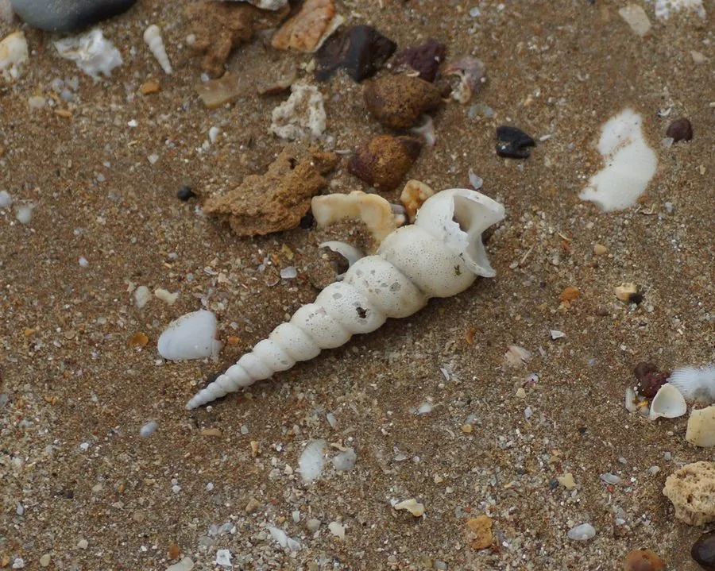

软体动物 · 动物界
笋锥螺 Turritella terebra

壳形细长如笋的锥螺，螺层多达二十余层，生活在沙泥海底，壳可作装饰，肉可食用，是沿海常见的海螺。
- 分类
- 门软体动物门纲腹足纲目中腹足目科锥螺科属锥螺属
- 栖息环境
- 潮间带下区至水深数十米的沙泥和泥沙底质海底
- 地理分布
- 印度洋至西太平洋热带和亚热带海域，包括中国东南沿海、日本南部、菲律宾和澳大利亚北部
- 保护级别
- 尚无专门评估；壳可制工艺品，肉可食用
物种志
笋锥螺的贝壳呈细长的圆锥形，壳高可达十五厘米，壳质坚实，壳面呈灰白至黄褐色，螺层多达二十余层，每一层都有细密的螺旋肋和纵纹，壳顶尖而细，壳口小，近圆形，口盖角质。它的壳形像一根倒立的竹笋，笋锥螺之名由此而来。足部较小，水管短，靠足部在沙泥中缓慢爬行。壳面螺层密集，是锥螺类最显著的特征。
它分布于印度洋至西太平洋的热带和亚热带海域，包括中国东南沿海、日本南部、菲律宾和澳大利亚北部，栖息在潮间带下区至水深数十米的沙泥和泥沙底质海底，常成群出现。它以有机碎屑和底栖微小生物为食，靠水管和齿舌取食，行动缓慢。繁殖期在春夏，雌雄异体，幼虫经浮游阶段后附着到沙泥底。笋锥螺壳形修长、螺层密集，常被制成工艺品和装饰品，肉也可食用，目前尚无专门的保护评估。
形态与习性
- 食性以有机碎屑和底栖微小生物为食
- 壳高可达十五厘米，螺层多达二十余层
- 壳形细长圆锥形，像一根倒立的竹笋
- 栖息深度潮间带下区至水深数十米的沙泥底
- 活动行动缓慢，靠足部在沙泥上爬行
- 利用壳可制工艺品和装饰品，肉可食
趣味知识
- 笋锥螺的螺层可以多达二十多层，越靠壳顶越细，像一座螺旋小塔。
- 它把壳尖插进沙里，只露出壳口，退潮时很难被发现。
- 完整的笋锥螺壳常被串成风铃和装饰品，是海岛旅游纪念品的常见材料。